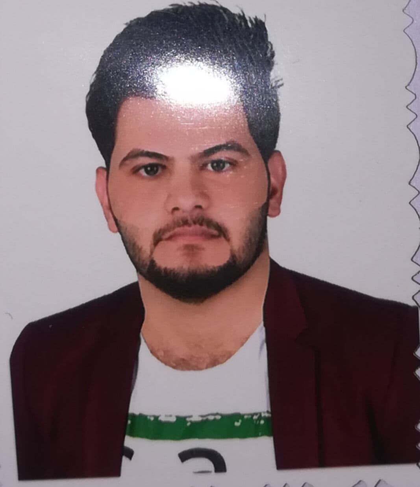

Diyaa Kareem Abd-Alhmzah
I am live in IRAQ /in Al-Qasisiyah Governorate
Qualification
I completed my preparatory studies at Al Thaqaleen
High School in the year 2016-2017
I completed my university studies at Al-Imam Al-Kadhim College
in the year 2019-2020, Department of Computer Technology Engineering,
with a GPA of 76, and I am the first in my morning class.
Practical experience
- I have experience in computer
formatting and installation of all programs
- I also have experience in Internet service
and the installation of systems such as nano,
as well as Mikrotik devices such as 912
My language level
| Languages | Proficiency ratio |
| Arabic | 100% |
| English | 70% |
You can contact me via Facebook
My Facebook
OR you can contact me via my number 07807731170